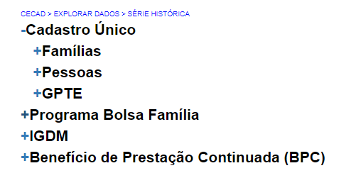
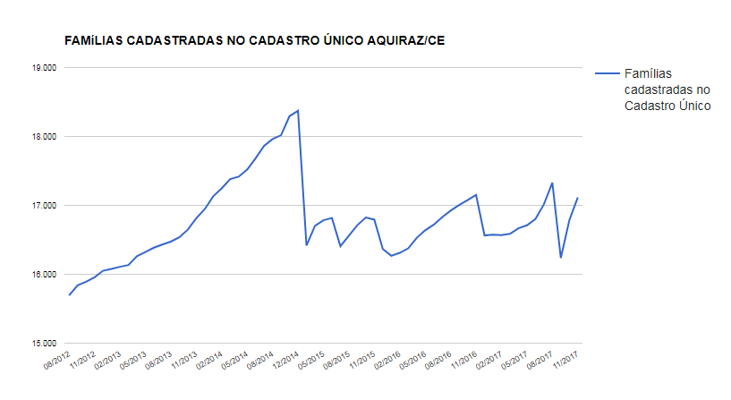

Cadastro Único¶
Na opção “Cadastro Único”, você encontrará relatórios relacionados a dados de famílias, pessoas e Grupos Populacionais Tradicionais e Específicos (GPTE):
Os relatórios de “FAMÍLIAS” são aqueles que trazem o quantitativo de famílias com renda zero atualizadas, famílias com indicação de trabalho infantil atualizadas, famílias no Cadastro Único, famílias no Cadastro Único x Atualização, famílias atualizadas, distribuição das famílias por faixa de renda per capita, distribuição de situação urbana/rural, famílias com pessoas em situação de trabalho infantil, distribuição de renda por família atualizada. A seguir, você encontra os conceitos de cada uma das variáveis que compõem os relatórios de famílias:
Famílias com renda zero atualizadas: famílias cuja renda per capita familiar é igual a zero e a última atualização cadastral ocorreu há dois anos ou menos
Famílias com indicação de trabalho infantil atualizadas: a metodologia empregada para identificação de família com trabalho infantil faz uma contagem das pessoas identificadas nos campos 10.01 e 10.02 do formulário de cadastramento, que tenham menos de 16 anos. A estas, adiciona-se as pessoas da família que apesar de não identificadas nesses campos possuam: a) idade maior ou igual a 10 anos e menor que 14 anos, com marcação de trabalho ou afastamento na semana anterior, obtidas nos campos 8.01 e 8.02 do Formulário, e b) pessoas que possuam idade maior ou igual a 14 anos e menor que 16 anos que não sejam estagiários ou aprendizes, conforme campo 8.04 do Formulário, com marcação de trabalho ou afastamento na semana anterior, obtidas nos campos 8.01 e 8.02. São contadas apenas as famílias cuja última atualização cadastral ocorreu há dois anos ou menos.
Famílias no Cadastro Único: total de famílias cadastradas no Cadastro Único.
Famílias cadastradas no Cadastro Único x Atualização: total de famílias cadastradas e total de famílias cuja última atualização cadastral ocorreu há dois anos ou menos.
Famílias atualizadas: total de famílias cuja última atualização cadastral ocorreu há dois anos ou menos.
Distruibuiçao das famílias por faixa de renda per capita: Famílias cuja renda per capita calculada pelo Sistema de Cadastro Único se encontra nas seguintes faixas de renda:
- Extrema pobreza: Renda por pessoa até R$ 89,00 (oitenta e nove reais);
- Pobreza: Renda por pessoa entre R$ 89,00 (oitenta e nove reais)e R$ 178,00 (cento e setenta e oito reais);
- Baixa renda: Renda por pessoa entre R$ 178,00 (cento e setenta e oito reais) e ½ salário mínimo;
- Acima de ½ salário mínimo: Renda por pessoa acima de R$ ½ salário mínimo.
Distruibuição de Situação Urbana/Rural: famílias com marcação de domicílio urbano ou rural no quesito 2.01 do bloco 2 dos formulários do Cadastro Único.
Famílias com pessoas em situação de trabalho infantil: A metodologia empregada para identificação de família com trabalho infantil faz uma contagem das pessoas identificadas nos campos 10.01 e 10.02 do Formulário de cadastramento, que tenham menos de 16 anos. A estas, adiciona as pessoas da família que apesar de não identificadas nesses campos possuam: a) idade maior ou igual a 10 anos e menor que 14 anos, com marcação de trabalho ou afastamento na semana anterior, obtidas nos campos 8.01 e 8.02 do Formulário, e b) pessoas que possuam idade maior ou igual a 14 anos e menor que 16 anos que não sejam estagiários ou aprendizes, conforme campo 8.04 do Formulário, com marcação de trabalho ou afastamento na semana anterior, obtidas nos campos 8.01 e 8.02.
Distribuição de renda por família atualizada: famílias cuja renda por família atualizada (última atualização cadastral ocorreu há dois anos ou menos) se encontra nas seguinter faixas de renda:
- Extrema pobreza: Renda por pessoa até R$ 89,00 (oitenta e nove reais);
- Pobreza: Renda por pessoa entre R$ 89,00 (oitenta e nove reais) e R$ 178,00 (cento e setenta e oito reais);
- Baixa renda: Renda por pessoa entre R$ 178,00 (cento e setenta e oito reais) e ½ salário mínimo;
- Acima de ½ salário mínimo: Renda por pessoa acima de R$ ½ salário mínimo.2
Os valores das faixas de renda são atualizados periodicamente e estão definidos no Decreto nº 5.209, de 17 de setembro de 2004.
Esses são indicadores que o município pode utilizar para verificar mudanças na situação das famílias cadastradas. Todos os relatórios são apresentados em forma de gráfico, como o seguinte, e em tabelas:
Se você clicar no menu “Série histórica” que aparece em baixo do gráfico, você encontrará uma tabela com todos os valores dos meses que compõem a série.
As abas “Maiores valores do país” e “Menores valores do país”, que aparecem embaixo da série histórica, servem para comparar os dados do último mês do seu município com os dados de outros municípios do país. A depender do perfil do usuário que está acessando o Cecad, podem aparecer as opções “Maiores valores do estado” e “Menores valores do estado”, com as respectivas comparações dos municípios do estado.
Os relatórios de PESSOAS são aqueles que trazem dados sobre as pessoas cadastradas. Além da quantidade de pessoas com CPF, são disponibilizadas informações sobre pessoas com deficiência, pessoas cadastradas no Cadastro Único, pessoas com CPF x pessoas no Cadastro, distribuição de raça/cor das pessoas cadastradas e distribuição da escolaridade das pessoas. Abaixo, você encontra os conceitos de cada uma das variáveis que compõem os relatórios de pessoas:
- Pessoas com CPF: Pessoas que têm a informação do número do CPF registrada no Cadastro Único.
- Pessoas com deficiência: Pessoa que informou “Sim” no quesito 6.01 do bloco 6 do formulário.
- Pessoas cadastradas no Cadastro único: Pessoas com estado cadastral “Cadastrado”.
- Pessoas com CPF X Pessoas no Cadastro: Pessoas que têm a informação do número do CPF registrada no Cadastro Único e Pessoas cadastradas no Cadastro Único.
- Distribuição de raça/cor das pessoas cadastradas: Informações do quesito 4.04 do Bloco 4 do formulário (1 – Branca; 2 – Preto; 3 – Amarelo; 4 – Parda; 5 – Indígena).
- Distribuição da escolaridade das pessoas: A classificação segundo o nível de instrução utilizada no Cadastro Único equivale ao modelo adotado pelo IBGE, e é obtida em função das informações da série e nível ou grau que a pessoa estava frequentando ou havia frequentado e da sua conclusão, compatibilizando os sistemas de ensino anteriores com o vigente, a saber:
- Fundamental completo - para a pessoa que: concluiu curso de ensino fundamental, 1º grau ou médio 1º ciclo; frequentava da 1ª à 3ª série de curso de ensino médio; ou frequentou, mas não concluiu o ensino médio ou 2º grau;
- Médio completo - para a pessoa que: frequentava a 4ª série do ensino médio; concluiu o ensino médio, 2º grau ou médio 2º ciclo; ou frequentava ou frequentou, mas não concluiu curso superior;
- Superior completo - para a pessoa que: concluiu curso superior; ou frequentava ou frequentou curso de mestrado, doutorado ou especialização de nível superior.
Nos relatórios de pessoas, você também gerará o gráfico com a série histórica da variável que você escolheu, verá os quantitativos ao longo do tempo e a comparação com os maiores e menores valores do país ou do estado.
Os relatórios de Grupos Populacionais Tradicionais e Específicos estão divididos por tipos de grupos. Primeiro há um relatório de GPTE Geral, com o total das famílias de cada um dos grupos e o total de famílias beneficiárias do Programa Bolsa Família de cada grupo. Essa informação é importante se você quiser saber se existe alguma família GPTE no seu município. Mas para ter uma informação mais detalhada, é importante especificar o tipo de grupo. O Ministério organizou os grupos em quatro tipos:
- Grupos étnicos: são aqueles que têm a etnia como sua característica mais marcante. São quilombolas, indígenas, pertencentes a povos de terreiro e ciganos.
- Grupos relacionados a questões conjunturais: são aqueles que se caracterizam por uma condição transitória. São as famílias em situação de rua, os resgatados de trabalho análogo ao de escravo, as famílias atingidas por empreendimentos de infraestrutura, as de catadores de materiais reciclados, e as famílias de preso do sistema carcerário. Em geral, são famílias urbanas, em alto grau de vulnerabilidade.
- Grupos relacionados ao meio ambiente: são aqueles que têm seu modo de vida bastante ligado ao meio ambiente em que vivem. São os extrativistas, os pescadores artesanais e os ribeirinhos.
- Grupos relacionados ao meio rural: são aqueles formados por famílias assentadas da reforma agrária, beneficiárias do Programa Nacional de Crédito Fundiário (PNCF), acampados e agricultores familiares.
Para ter a definição de cada um dos grupos, você pode consultar a filipeta dos grupos tradicionais e específicos que deve acompanhar todo entrevistador no momento de fazer a entrevista. Ela está disponível no Manual do Entrevistador e no site do Ministério.
Você pode analisar o quantitativo de famílias em cada grupo. Por exemplo, ver o quantitativo de famílias em grupos relacionados ao meio rural. Isso pode ser útil porque são famílias que exigem políticas semelhantes.
Para todos os grupos você pode analisar a evolução do total de famílias cadastradas, atualizadas, de famílias beneficiárias do Programa Bolsa Família e de famílias com renda de até R$ ½ salário mínimo per capita. Você também pode comparar com os maiores e menores valores do país e do estado.